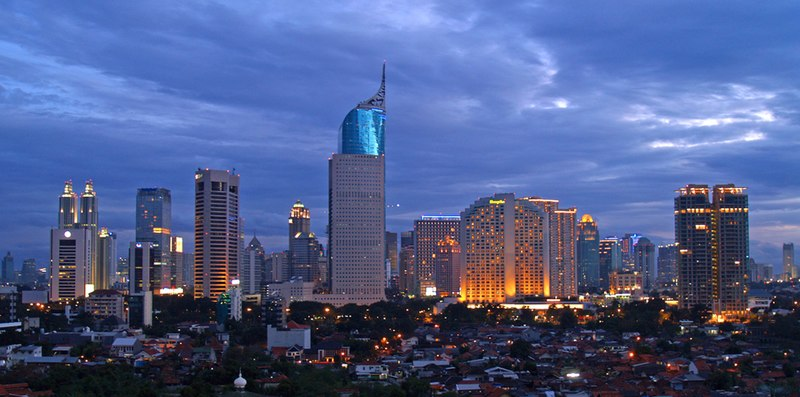

Ibu Kota Indonesia
Jakarta
Jakarta, atau secara resmi bernama Daerah Khusus Ibukota Jakarta atau DKI Jakarta adalah ibu kota negara dan kota terbesar di Indonesia. Jakarta merupakan satu-satunya kota di Indonesia yang memiliki status setingkat provinsi. Jakarta terkenal dengan tugu monas yang merupakan monumen peringatan untuk mengenang perlawanan dan perjuangan rakyat Indonesia untuk merebut kemerdekaan dari pemerintahan kolonial Hindia Belanda.
